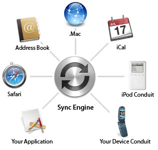

BSNL provides almost every telecom service in India. Following are the main telecom services provided by BSNL:
Cellular Mobile Telephone Services : BSNL is major provider of Cellular Mobile Telephone services using GSM platform under the brand name Cellone & Excel (BSNL Mobile). As of June 30, 2010 BSNL has 13.50% share of mobile telephony in the country.
Internet : BSNL provides Internet access services through dial-up connection (as Sancharnet through 2009) as Prepaid, (NetOne) as Postpaid and ADSL broadband (BSNL Broadband). BSNL held 55.76% of the market share with reported subscriber base of 9.19 million Internet subscribers with 7.79% of growth at the end of March 2010.[citation needed] Top 12 Dial-up Service providers, based on the subscriber base, It Also Provides OnlineGames via Its Games on Demand (GOD)
3G : BSNL offers the '3G' or the'3rd Generation' services which includes facilities like video calling, mobile broadband, live TV, 3G Video portal, streaming services like online full length movies and video on demand etc.
VVoIP : BSNL, along with Sai Infosystem - an Information and Communication Technologies (ICTs) provider - has launched Voice and Video Over Internet Protocol (VVoIP). This will allow to make audio as well as video calls to any landline, mobile, or IP phone anywhere in the world, provided that the requisite video phone equipment is available at both ends
WiMax : BSNL has introduced India's first 4th Generation High-Speed Wireless Broadband Access Technology with the minimum speed of 256kbit/s. The focus of this service is mainly rural customer where the wired broadband facility is not available.